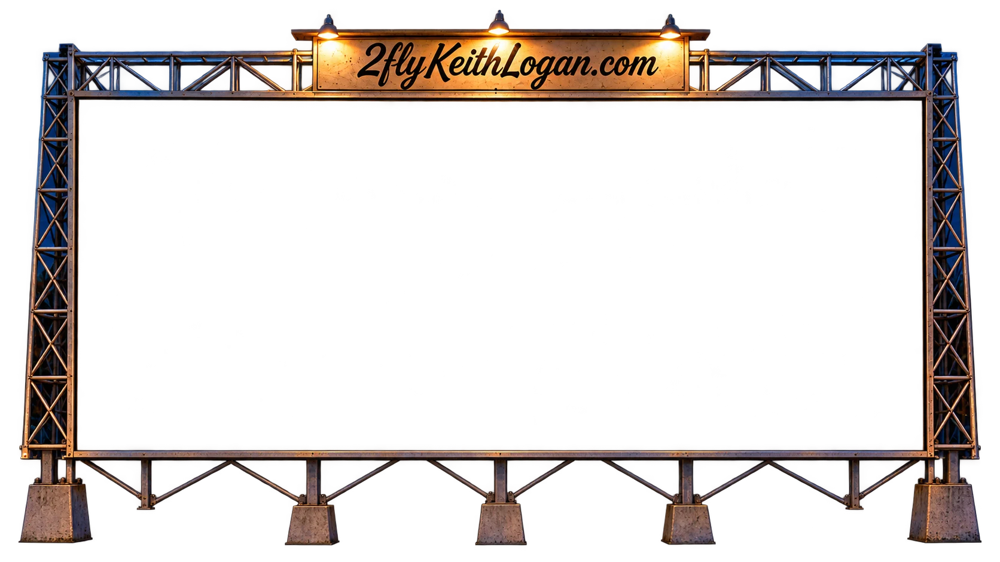

THE DRIVE-IN OPEN AFTER DARK

TONIGHT'S FEATURE
I Was Away
2Fly Keith Logan
The film couldn’t load.
Check your connection and give it another try.
Open original video ↗I Was Away
VOLUME
FM STEREO
TUNING
88.1 FM · I Was Away
PARK FOR A WHILE. YOU’RE IN GOOD COMPANY.